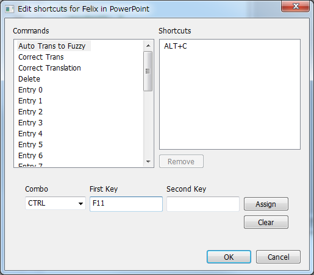

9.3. Setting Preferences¶
To configure the preferences, select Felix ‣ Felix Preferences` from the menu. The Felix Preferences dialog appears.
There are four tabs in the Felix Preferences dialog: The View tab, the Format tab, the Segmentation tab, and the Translation History tab.
9.3.1. View Tab¶
- Interface Language:
- English:
- Set the interface language to English
- Japanese:
- Set the interface language to Japanese
- After last text on slide:
- Go to next slide
- Go to the next slide, and select the first segment there.
- Go to top of slide
- Select the first segment on this slide.
- Ask me
- Display a confirmation dialog box that asks me what to do.
- Raise Felix window on Felix command
- Select this checkbox to raise the Felix window to the top when you execute a Felix command.
- Keyboard Shortcuts...
Display the Keyboard shortcuts dialog box.

The Keyboard Shortcuts dialog box for PowerPoint
9.3.2. Format Tab¶
- Preserve Formatting:
Select whether each of the following types of text formatting information are to be preserved.
- Font Color
- Bold
- Italic
- Underline
9.3.3. Segmentation Tab¶
- End of Segment Characters:
- These are the characters that mark the end of a segment.
- Skip segments containing only numbers:
- Useful when translating tables of figures and the like. When selected, Felix will skip over number-only segments.
- Double-byte Characters:
- Skip if there are Asian chars:
- Skip any segments that contain Asian (Japanese/Korean/Chinese) characters.
- Skip unless there are Asian chars:
- Skip any segments that do not contain any Asian characters.
- Translate all (default):
- Translate all segments regardless of whether or not they contain Asian characters.